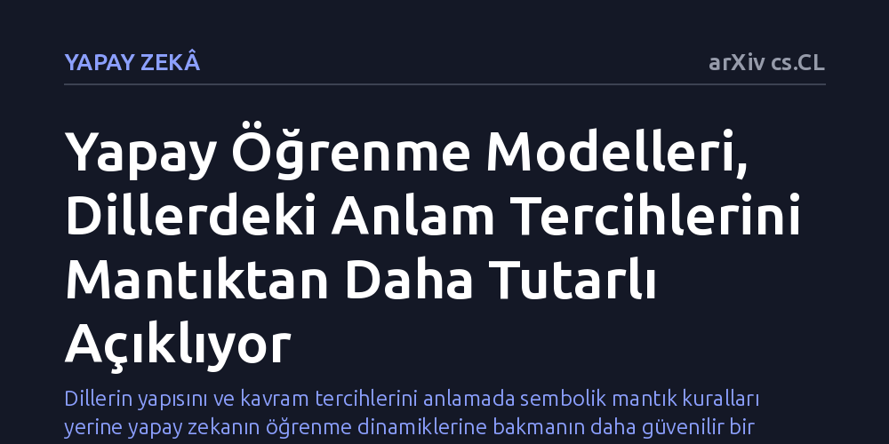

YAPAY-ZEKA · arXiv cs.CL · 2026-10-10
İnsan dillerinin neden bazı anlamları diğerlerine tercih ettiğini araştıran çalışma, yapay öğrenme modellerinin anlamsal karmaşıklığı mantıksal tanımlardan daha tarafsız ölçtüğünü gösteriyor. Bulgular, mantık ile öğrenme modellerinin ayrıştığı durumlarda yapay öğrenmenin dillerdeki anlam dağılımını daha başarılı açıkladığını ortaya koyuyor.
Dillerin yapısını ve kavram tercihlerini anlamada sembolik mantık kuralları yerine yapay zekanın öğrenme dinamiklerine bakmanın daha güvenilir bir ölçüt sunduğunu gösterir.

Dünya üzerindeki binlerce doğal dil birbirinden çok farklı görünse de anlamların yapılandırılmasında şaşırtıcı benzerlikler taşır. Örneğin renkler, yönler veya miktar bildiren sözcükler incelendiğinde, dillerin teorik olarak var olabilecek sayısız anlam kombinasyonundan yalnızca belirli bir kısmını tercih ettiği görülür. İnsan zihninin anlamsal kategorileri nasıl temsil ettiği ve dillerin neden rastgele değil de belirli kavram kümeleri etrafında şekillendiği sorusu, bilişsel bilimlerin temel tartışma alanlarından biridir.
Geleneksel dilbilim ve felsefe bu tercihi genellikle mantıksal karmaşıklıkla açıklamaya çalışmıştır. Bu klasik yaklaşıma göre, mantıksal olarak tanımlanması daha basit ve kısa olan kavramlar dillerde daha kolay yer bulur, karmaşık olanlar ise elenir. Ancak hangi mantık dilinin temel alınacağı sorusu araştırmacıların kişisel seçimlerine bağlı kaldığı için, bu kuramlar çoğu zaman nesnel ve genelgeçer bir temel sunmakta yetersiz kalmaktadır.
Araştırmacılar, mantık sistemlerinin taraflı ve biçimsel kısıtlarına takılmak yerine yapay öğrenme algoritmalarından yararlanmayı öneriyor. Yapay sinir ağları gibi öğrenme modelleri, belirli bir kavramı veya kategoriyi veriden öğrenirken belirli bir hesaplama zorluğuyla karşılaşır. Bir modelin bir anlamı öğrenme süresi ve zorluğu, o anlamın doğasında bulunan karmaşıklığı ölçmek için kurallara daha az bağımlı, nesnel bir zemin sağlayabilir.
Çalışmada yazarlar, mevcut kuramsal ve deneysel literatürü inceleyerek sembolik mantığın hesapladığı karmaşıklık dereceleri ile makine öğrenmesi modellerinin zorluk ölçümlerini karşılaştırıyor. Amaç, dillerin çeşitliliğini ve tipolojik eğilimlerini açıklarken insan öğrenmesini simüle eden modellerin ne derece güvenilir bir gösterge sunduğunu tespit etmektir.
İncelenen kanıtlar, sembolik mantık ile yapay öğrenme modellerinin göreceli karmaşıklık konusunda çoğu zaman birbiriyle örtüşen sonuçlar verdiğini göstermektedir. Hem mantıksal olarak daha az adımda tanımlanabilen hem de yapay öğrenme algoritmalarınca daha çabuk kavranan anlamlar, dünya dillerinde belirgin biçimde daha sık görülmektedir. Bu örtüşme, dillerin anlamsal evriminde basitlik ve öğrenilebilirlik ilkelerinin belirleyici olduğunu doğrulamaktadır.
Asıl dikkat çekici bulgu ise iki yöntemin birbiriyle çeliştiği durumlarda ortaya çıkmaktadır. Mantıksal olarak basit görünen fakat öğrenilmesi zor olan ya da tam tersi durumlarda, dillerin gerçek dağılımını yapay öğrenme modellerinin çok daha isabetli tahmin ettiği görülmektedir. Başka bir deyişle, insan dilinin hangi kavramları benimseyeceğini anlamak için katı mantık formülleri yerine öğrenme süreçlerinin getirdiği zorluk derecelerine bakmak daha tutarlı sonuçlar vermektedir.
Yazarlar bu bulgulardan yola çıkarak, makine öğrenmesi modellerinin insan bilişini doğrudan kopyalamasa bile kavramsal zorluğu tartan birer 'bilişsel termometre' gibi işlev görebileceğini savunmaktadır. Tıpkı bir termometrenin sıcaklığı mekanik olarak ölçüp bize ortam hakkında fikir vermesi gibi, öğrenme algoritmaları da insan zihninin hangi anlamları daha kolay benimseyebileceğini ölçen tarafsız bir araç vazifesi görebilir.
Bu yaklaşım, uzun yıllardır birbirine rakip olarak görülen sembolik mantık ile bağlantıcı yapay zeka arasında güçlü bir köprü kurmaktadır. Dillerin neden bu şekilde kurulduğunu araştıran bilişsel bilimciler, gelecekte dil teorilerini sınamak ve insan zihninin kategorileştirme ilkelerini modellemek için yapay zekayı tarafsız bir laboratuvar aracı olarak kullanabilir.